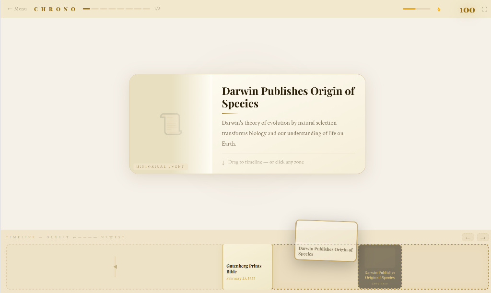

100% Free Studying Tool
A browser-based review tool built to match 20th-century history datasets. Drag and drop historical developments into their proper chronological sequence to evaluate your knowledge of event orderings.

The application contains pre-configured timeline lists structured around the core components of the IB History exam blueprint.
Covers structural events relating to the rise, consolidation, and domestic policies of regimes led by Hitler, Mussolini, and Mao Zedong.
Focuses on the chronological timeline of Japanese expansionism in East Asia alongside German and Italian aggression during the interwar period.
Tracks international relations chronologically from wartime conferences through major superpower flashpoints, proxy conflicts, and treaties up to 1991.